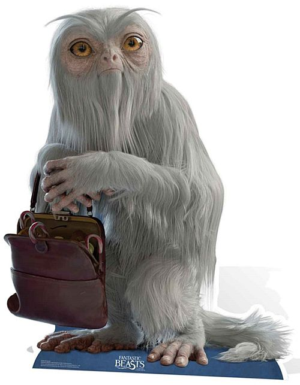

뒤로 가기

백은빛의 길게 기른 털을 가진 초식동물인 데미가이즈는 마른 체형의 오랑우탄과 안경원숭이를 합친 것처럼 생긴 마법생물이다.
주로 극동에서 출현하나 발견하기가 매우 어려운 게, 데미가이즈는 몸을 투명하게 만들 수 있기 때문이다.
온순하기 때문에 인간에게 위협이 되지는 않지만 이 생물의 털으로 투명망토를 만들 수 있기에 데미가이즈의 가죽은 비싸게 매매된다.
확률에 기초하여 미래에 일어날 일을 본다. 이때 눈이 파랑색으로 변한다. 투명화 능력에 확률성 미래예지 능력까지 있으니 포획이 어려울 수 밖에 없다.